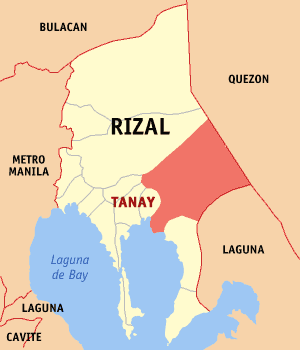

DEMOGRAPHICS

The household population of Tanay in the 2015 Census was 116,503 broken down into 25,836 households or an average of 4.51 members per household.According to the 2015 Census, the age group with the highest population in Tanay is 5 to 9, with 13,440 individuals. Conversely, the age group with the lowest population is 80 and over, with 654 individuals.Combining age groups together, those aged 14 and below, consisting of the young dependent population which include infants/babies, children and young adolescents/teenagers, make up an aggregate of 33.96% (40,010). Those aged 15 up to 64, roughly, the economically active population and actual or potential members of the work force, constitute a total of 62.22% (73,312). Finally, old dependent population consisting of the senior citizens, those aged 65 and over, total 3.83% (4,508) in all.The computed Age Dependency Ratios mean that among the population of Tanay, there are 55 youth dependents to every 100 of the working age population; there are 6 aged/senior citizens to every 100 of the working population; and overall, there are 61 dependents (young and old-age) to every 100 of the working population.The median age of 23 indicates that half of the entire population of Tanay are aged less than 23 and the other half are over the age of 23.The population of Tanay grew from 4,124 in 1903 to 139,420 in 2020, an increase of 135,296 people over the course of 117 years. The latest census figures in 2020 denote a positive growth rate of 3.60%, or an increase of 21,590 people, from the previous population of 117,830 in 2015.